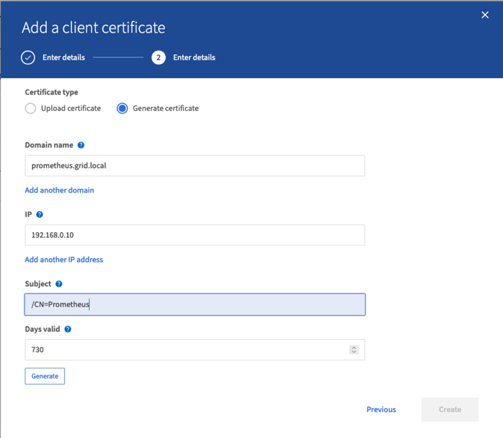
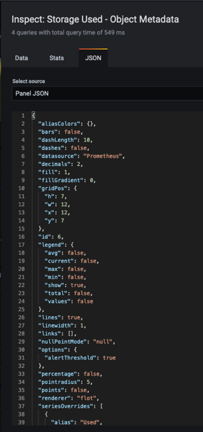
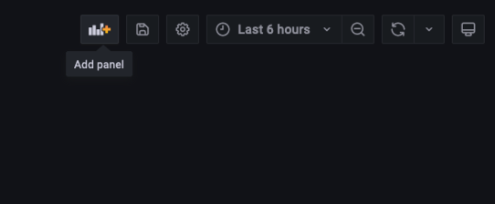

Richiedi modifiche alla documentazione
Richiedi modifiche alla documentazione Modifica questa pagina
Modifica questa pagina Scopri come collaborare
Scopri come collaborareUtilizza Prometheus e Grafana per estendere la conservazione delle metriche
Collaboratori
Aron Klein
Questo report tecnico fornisce istruzioni dettagliate per la configurazione di NetApp StorageGRID 11.6 con servizi esterni Prometheus e Grafana.
Introduzione
StorageGRID memorizza le metriche utilizzando Prometheus e fornisce visualizzazioni di queste metriche attraverso dashboard Grafana integrate. È possibile accedere in modo sicuro alle metriche Prometheus da StorageGRID configurando i certificati di accesso client e abilitando l’accesso prometheus per il client specificato. Oggi, la conservazione di questi dati metrici è limitata dalla capacità di storage del nodo di amministrazione. Per ottenere una durata maggiore e la possibilità di creare visualizzazioni personalizzate di queste metriche, implementeremo un nuovo server Prometheus e Grafana, configureremo il nostro nuovo server per scartare le metriche dall’istanza StorageGRID e costruiremo una dashboard con le metriche che sono importanti per noi. È possibile ottenere ulteriori informazioni sulle metriche Prometheus raccolte in "Documentazione StorageGRID".
Federare Prometheus
Dettagli del laboratorio
Ai fini di questo esempio, userò tutte le macchine virtuali per i nodi StorageGRID 11.6 e un server Debian 11. L’interfaccia di gestione di StorageGRID è configurata con un certificato CA pubblicamente attendibile. Questo esempio non riguarda l’installazione e la configurazione del sistema StorageGRID o dell’installazione di Debian linux. Puoi utilizzare qualsiasi versione di Linux supportata da Prometheus e Grafana. Prometheus e Grafana possono essere installati come container docker, build from source o binari pre-compilati. In questo esempio installerò entrambi i binari Prometheus e Grafana direttamente sullo stesso server Debian. Scaricare e seguire le istruzioni di installazione di base da https://prometheus.io e. https://grafana.com/grafana/ rispettivamente.
Configurare StorageGRID per l’accesso al client Prometheus
Per ottenere l’accesso alle metriche StorageGRID Stored prometheus, è necessario generare o caricare un certificato client con chiave privata e abilitare l’autorizzazione per il client. L’interfaccia di gestione StorageGRID deve disporre di un certificato SSL. Il certificato deve essere attendibile dal server prometheus da una CA attendibile o manualmente se autofirmato. Per ulteriori informazioni, visitare il "Documentazione StorageGRID".
-
Nell’interfaccia di gestione di StorageGRID, selezionare "CONFIGURATION" (CONFIGURAZIONE) in basso a sinistra e nella seconda colonna sotto "Security" (sicurezza) fare clic su Certificates (certificati).
-
Nella pagina certificati, selezionare la scheda "Client" e fare clic sul pulsante "Aggiungi".
-
Specificare un nome per il client a cui verrà concesso l’accesso e utilizzare questo certificato. Fare clic sulla casella sotto "permessi", davanti a "Consenti Prometheus" e fare clic sul pulsante continua.

-
Se si dispone di un certificato firmato dalla CA, è possibile selezionare il pulsante di opzione "carica certificato", ma in questo caso StorageGRID genererà il certificato client selezionando il pulsante di opzione "genera certificato". Vengono visualizzati i campi obbligatori da compilare. Inserire l’FQDN per il server client, l’IP del server, l’oggetto e i giorni validi. Quindi fare clic sul pulsante "generate" (genera).


|
Be mindful of the certificate days valid entry as you will need to renew this certificate in both StorageGRID and the Prometheus server before it expires to maintain uninterrupted collection. |
-
Scaricare il file pem del certificato e il file pem della chiave privata.

|
|
This is the only time you can download the private key, so make sure you do not skip this step. |
Preparare il server Linux per l’installazione di Prometheus
Prima di installare Prometheus, desidero preparare il mio ambiente con un utente Prometheus, la struttura di directory e configurare la capacità per la posizione di storage delle metriche.
-
Creare l’utente Prometheus.
sudo useradd -M -r -s /bin/false Prometheus -
Creare le directory per Prometheus, certificato client e dati di metriche.
sudo mkdir /etc/Prometheus /etc/Prometheus/cert /var/lib/Prometheus -
Ho formattato il disco che sto usando per la conservazione delle metriche con un filesystem ext4.
mkfs -t ext4 /dev/sdb
-
Ho quindi montato il file system nella directory Prometheus metrics.
sudo mount -t auto /dev/sdb /var/lib/prometheus/
-
Ottenere l’uuid del disco utilizzato per i dati delle metriche.
sudo ls -al /dev/disk/by-uuid/ lrwxrwxrwx 1 root root 9 Aug 18 17:02 9af2c5a3-bfc2-4ec1-85d9-ebab850bb4a1 -> ../../sdb
-
Aggiungere una voce in /etc/fstab/ rendere il mount persistente durante i riavvii usando l’uuid di /dev/sdb.
/etc/fstab UUID=9af2c5a3-bfc2-4ec1-85d9-ebab850bb4a1 /var/lib/prometheus ext4 defaults 0 0
Installare e configurare Prometheus
Ora che il server è pronto, posso iniziare l’installazione di Prometheus e configurare il servizio.
-
Estrarre il pacchetto di installazione di Prometheus
tar xzf prometheus-2.38.0.linux-amd64.tar.gz -
Copiare i file binari in /usr/local/bin e modificare la proprietà dell’utente prometheus creato in precedenza
sudo cp prometheus-2.38.0.linux-amd64/{prometheus,promtool} /usr/local/bin sudo chown prometheus:prometheus /usr/local/bin/{prometheus,promtool} -
Copiare le console e le librerie in /etc/prometheus
sudo cp -r prometheus-2.38.0.linux-amd64/{consoles,console_libraries} /etc/prometheus/ -
Copiare i file PEM del certificato client e della chiave privata scaricati in precedenza da StorageGRID in /etc/prometheus/certs
-
Creare il file yaml di configurazione prometheus
sudo nano /etc/prometheus/prometheus.yml -
Inserire la seguente configurazione. Il nome del lavoro può essere qualsiasi cosa si desideri. Modificare "-targets: ['']" in FQDN del nodo admin e, se i nomi dei file dei certificati e delle chiavi private sono modificati, aggiornare la sezione tls_config in modo che corrisponda. quindi salvare il file. Se l’interfaccia di gestione della griglia utilizza un certificato autofirmato, scaricare il certificato e posizionarlo con il certificato client con un nome univoco, quindi nella sezione tls_config aggiungere ca_file: /Etc/prometheus/cert/UIcert.pem
-
In questo esempio, vengono raccolte tutte le metriche che iniziano con alertmanager, cassandra, Node e StorageGRID. Per ulteriori informazioni sulle metriche Prometheus, consultare la "Documentazione StorageGRID".
# my global config global: scrape_interval: 60s # Set the scrape interval to every 15 seconds. Default is every 1 minute. scrape_configs: - job_name: 'StorageGRID' honor_labels: true scheme: https metrics_path: /federate scrape_interval: 60s scrape_timeout: 30s tls_config: cert_file: /etc/prometheus/cert/certificate.pem key_file: /etc/prometheus/cert/private_key.pem params: match[]: - '{__name__=~"alertmanager_.*|cassandra_.*|node_.*|storagegrid_.*"}' static_configs: - targets: ['sgdemo-rtp.netapp.com:9091']
-
|
|
Se l’interfaccia di gestione della griglia utilizza un certificato autofirmato, scaricare il certificato e posizionarlo con il certificato client con un nome univoco. Nella sezione tls_config aggiungere il certificato sopra le righe del certificato client e della chiave privata ca_file: /etc/prometheus/cert/UIcert.pem |
-
Modificare la proprietà di tutti i file e le directory in /etc/prometheus e /var/lib/prometheus nell’utente prometheus
sudo chown -R prometheus:prometheus /etc/prometheus/ sudo chown -R prometheus:prometheus /var/lib/prometheus/ -
Creare un file di servizio prometheus in /etc/systemd/system
sudo nano /etc/systemd/system/prometheus.service -
Inserire le seguenti righe, annotare il n.--storage.tsdb.retention.time=1y n. che imposta la conservazione dei dati metrici su 1 anno. In alternativa, è possibile utilizzare n.--storage.tsdb.retention.size=n. 300GiB per basare la conservazione sui limiti di storage. Questa è l’unica posizione in cui impostare la conservazione delle metriche.
[Unit] Description=Prometheus Time Series Collection and Processing Server Wants=network-online.target After=network-online.target [Service] User=prometheus Group=prometheus Type=simple ExecStart=/usr/local/bin/prometheus \ --config.file /etc/prometheus/prometheus.yml \ --storage.tsdb.path /var/lib/prometheus/ \ --storage.tsdb.retention.time=1y \ --web.console.templates=/etc/prometheus/consoles \ --web.console.libraries=/etc/prometheus/console_libraries [Install] WantedBy=multi-user.target -
Ricaricare il servizio systemd per registrare il nuovo servizio prometheus. quindi avviare e attivare il servizio prometheus.
sudo systemctl daemon-reload sudo systemctl start prometheus sudo systemctl enable prometheus -
Verificare che il servizio sia in funzione correttamente
sudo systemctl status prometheus● prometheus.service - Prometheus Time Series Collection and Processing Server Loaded: loaded (/etc/systemd/system/prometheus.service; enabled; vendor preset: enabled) Active: active (running) since Mon 2022-08-22 15:14:24 EDT; 2s ago Main PID: 6498 (prometheus) Tasks: 13 (limit: 28818) Memory: 107.7M CPU: 1.143s CGroup: /system.slice/prometheus.service └─6498 /usr/local/bin/prometheus --config.file /etc/prometheus/prometheus.yml --storage.tsdb.path /var/lib/prometheus/ --web.console.templates=/etc/prometheus/consoles --web.con> Aug 22 15:14:24 aj-deb-prom01 prometheus[6498]: ts=2022-08-22T19:14:24.510Z caller=head.go:544 level=info component=tsdb msg="Replaying WAL, this may take a while" Aug 22 15:14:24 aj-deb-prom01 prometheus[6498]: ts=2022-08-22T19:14:24.816Z caller=head.go:615 level=info component=tsdb msg="WAL segment loaded" segment=0 maxSegment=1 Aug 22 15:14:24 aj-deb-prom01 prometheus[6498]: ts=2022-08-22T19:14:24.816Z caller=head.go:615 level=info component=tsdb msg="WAL segment loaded" segment=1 maxSegment=1 Aug 22 15:14:24 aj-deb-prom01 prometheus[6498]: ts=2022-08-22T19:14:24.816Z caller=head.go:621 level=info component=tsdb msg="WAL replay completed" checkpoint_replay_duration=55.57µs wal_rep> Aug 22 15:14:24 aj-deb-prom01 prometheus[6498]: ts=2022-08-22T19:14:24.831Z caller=main.go:997 level=info fs_type=EXT4_SUPER_MAGIC Aug 22 15:14:24 aj-deb-prom01 prometheus[6498]: ts=2022-08-22T19:14:24.831Z caller=main.go:1000 level=info msg="TSDB started" Aug 22 15:14:24 aj-deb-prom01 prometheus[6498]: ts=2022-08-22T19:14:24.831Z caller=main.go:1181 level=info msg="Loading configuration file" filename=/etc/prometheus/prometheus.yml Aug 22 15:14:24 aj-deb-prom01 prometheus[6498]: ts=2022-08-22T19:14:24.832Z caller=main.go:1218 level=info msg="Completed loading of configuration file" filename=/etc/prometheus/prometheus.y> Aug 22 15:14:24 aj-deb-prom01 prometheus[6498]: ts=2022-08-22T19:14:24.832Z caller=main.go:961 level=info msg="Server is ready to receive web requests." Aug 22 15:14:24 aj-deb-prom01 prometheus[6498]: ts=2022-08-22T19:14:24.832Z caller=manager.go:941 level=info component="rule manager" msg="Starting rule manager..." -
A questo punto, dovresti essere in grado di accedere all’interfaccia utente del tuo server prometheus http://Prometheus-server:9090 E consultare l’interfaccia utente

-
Sotto "Stato", è possibile visualizzare lo stato dell’endpoint StorageGRID configurato in prometheus.yml


-
Nella pagina Graph (grafico), è possibile eseguire una query di test e verificare che i dati siano stati scartati correttamente. Ad esempio, immettere "storagegrid_node_cpu_Utilization_percent" nella barra delle query e fare clic sul pulsante Execute.

Installare e configurare Grafana
Ora che prometheus è installato e funzionante, possiamo passare all’installazione di Grafana e alla configurazione di una dashboard
Installazione di Grafana
-
Installare l’ultima edizione Enterprise di Grafana
sudo apt-get install -y apt-transport-https sudo apt-get install -y software-properties-common wget sudo wget -q -O /usr/share/keyrings/grafana.key https://packages.grafana.com/gpg.key -
Aggiungi questo repository per le release stabili:
echo "deb [signed-by=/usr/share/keyrings/grafana.key] https://packages.grafana.com/enterprise/deb stable main" | sudo tee -a /etc/apt/sources.list.d/grafana.list -
Dopo aver aggiunto il repository.
sudo apt-get update sudo apt-get install grafana-enterprise -
Ricaricare il servizio systemd per registrare il nuovo servizio Grafana. Quindi avviare e attivare il servizio Grafana.
sudo systemctl daemon-reload sudo systemctl start grafana-server sudo systemctl enable grafana-server.service -
Grafana è ora installato e in esecuzione. Quando si apre un browser per HTTP://Prometheus-server:3000 viene visualizzata la pagina di accesso Grafana.
-
Le credenziali di accesso predefinite sono admin/admin ed è necessario impostare una nuova password come richiesto.
Creare una dashboard Grafana per StorageGRID
Con Grafana e Prometheus installati e in esecuzione, ora è il momento di collegare i due elementi creando un’origine dati e creando una dashboard
-
Nel riquadro di sinistra, espandere "Configuration" (Configurazione) e selezionare "Data Sources" (origini dati), quindi fare clic sul pulsante "Add Data Source" (Aggiungi origine dati)
-
Prometheus sarà una delle principali fonti di dati tra cui scegliere. In caso contrario, utilizzare la barra di ricerca per individuare "Prometheus"
-
Configurare l’origine Prometheus immettendo l’URL dell’istanza prometheus e l’intervallo di scrape in modo che corrisponda all’intervallo Prometheus. Ho anche disattivato la sezione degli avvisi perché non ho configurato il gestore degli avvisi su prometheus.

-
Una volta inserite le impostazioni desiderate, scorrere verso il basso e fare clic su "Save & test" (Salva e verifica).
-
Una volta completato il test di configurazione, fare clic sul pulsante Esplora.
-
Nella finestra Esplora puoi utilizzare la stessa metrica che abbiamo testato Prometheus con "storagegrid_node_cpu_Utilization_percent" e fare clic sul pulsante "Esegui query"

-
-
Ora che abbiamo configurato l’origine dati, possiamo creare una dashboard.
-
Nel riquadro di sinistra, espandere "Dashboard" e selezionare "+ new Dashboard"
-
Seleziona "Aggiungi un nuovo pannello"
-
Configurare il nuovo pannello selezionando una metrica, di nuovo userò "storagegrid_node_cpu_Utilization_Percent", inserire un titolo per il pannello, espandere "Opzioni" in basso e per la modifica della legenda su custom e inserire "{{instance}}" per definire i nomi dei nodi", e nel pannello di destra in "Opzioni standard" impostare "unità" su "varie/percentuali(0-100)". Quindi fare clic su "Apply" (Applica) per salvare il pannello nella dashboard.

-
-
Potremmo continuare a costruire la nostra dashboard in questo modo per ogni metrica che vogliamo, ma fortunatamente StorageGRID dispone già di dashboard con pannelli che possiamo copiare nelle nostre dashboard personalizzate.
-
Dal riquadro sinistro dell’interfaccia di gestione StorageGRID, selezionare "supporto", quindi fare clic su "metriche" nella parte inferiore della colonna "Strumenti".
-
All’interno delle metriche, selezionerò il link "Grid" nella parte superiore della colonna centrale.

-
Dalla dashboard della griglia, selezionare il pannello "Storage used - Object Metadata" (Storage utilizzato - metadati oggetto). Fare clic sulla piccola freccia verso il basso e sulla fine del titolo del pannello per visualizzare un menu a discesa. Da questo menu selezionare "Inspect" (ispezione) e "Panel JSON" (pannello JSON).

-
Copiare il codice JSON e chiudere la finestra.

-
Nella nuova dashboard, fare clic sull’icona per aggiungere un nuovo pannello.

-
Applicare il nuovo pannello senza apportare modifiche
-
Proprio come per il pannello StorageGRID, controllare il JSON. Rimuovere tutto il codice JSON e sostituirlo con il codice copiato dal pannello StorageGRID.

-
Modificare il nuovo pannello e sul lato destro viene visualizzato un messaggio di migrazione con il pulsante "Migrate" (migrazione). Fare clic sul pulsante, quindi sul pulsante "Apply" (Applica).


-
-
Una volta che tutti i pannelli sono in posizione e configurati come si desidera. Salvare la dashboard facendo clic sull’icona del disco in alto a destra e assegnando un nome alla dashboard.
Conclusione
Ora disponiamo di un server Prometheus con capacità di storage e conservazione dei dati personalizzabili. Con questo possiamo continuare a costruire le nostre dashboard con le metriche più rilevanti per le nostre operazioni. È possibile ottenere ulteriori informazioni sulle metriche Prometheus raccolte in "Documentazione StorageGRID".